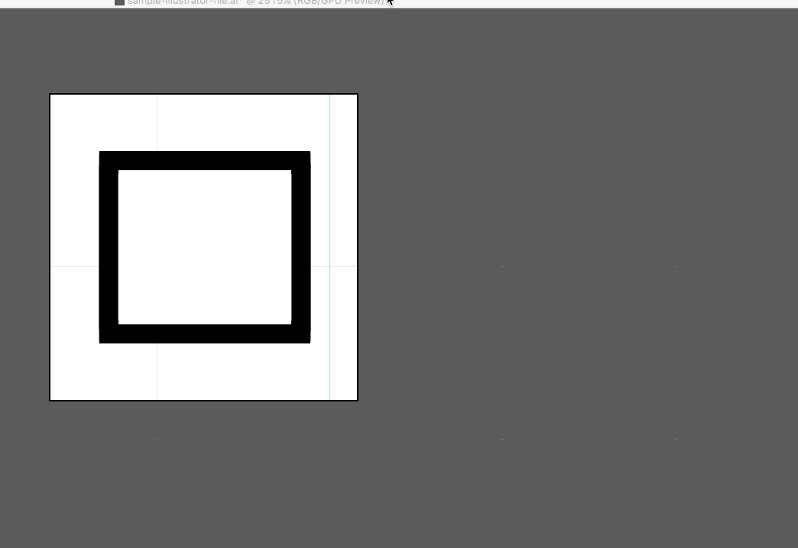
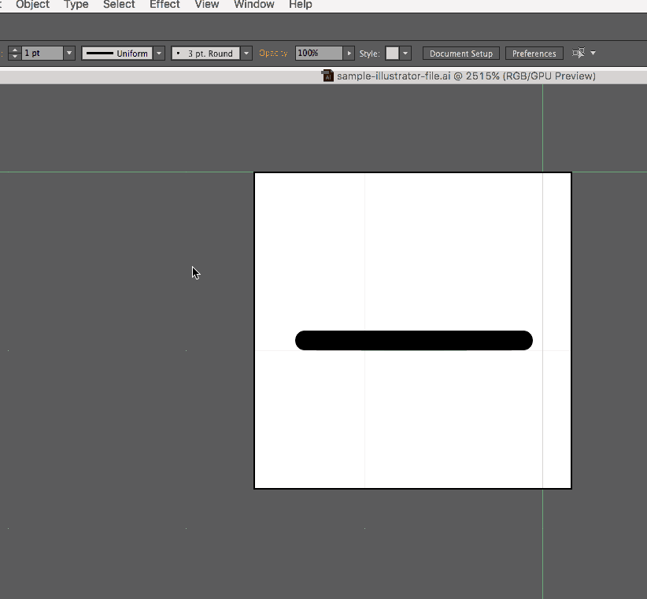

Panel SVGs
If you'd like to create an icon for a panel you've made for devtools, this is meant to be a handy guide for making sure you SVGs are compressed and neatly formatted as possible :tada:
Table of Contents
- Explanation of Pixel Grid
- Tips for Illustrator SVGs
- Contributing Other Design Workflows
- Bash Script for Cleaning SVGs
- Contributing Code
Explanation of Pixel Grid
Since so many of our SVGs appear so small, designing them on the pixel grid will help them not appear fuzzy when they’re sized down to 16x16 pixels.
For Illustrator you’ll want the following settings:
- Document settings:
Units: pixels,Advanced> checkAlign New Objects to Pixel Grid - Transform Panel: for existing artwork not on pixel grid, select and then within
Transform>Advanced> checkAlign to Pixel Grid
You can get a more detailed breakdown with images here.
You can download a sample Illustrator file here.
Tips for Illustrator SVGs
When you’re designing your icons in a graphics editor like Adobe Illustrator, there are a lot of things you can do that will bring down the size of the file and make your SVGs easier for the developers to work with. Here are some of them:
- Expand paths: Instead of having multiple shapes overlapping each other, expand shapes using the pathfinder. 
- Simplify paths (
Object>Path>Simplify) - Expand objects so that stokes become objects. This has the added benefit of keeping the stroke size intact as the SVG is resized. 
Devtools-Specific Requests
The devtools panel icons do a couple of things in a specific way; following these guidelines will help stick your patch:
- Inline fill colors. Devtools panel icons all use
fill=whitesmokein the<svg>tag. - Inline opacities. Devtools panel icons also inline opacities on their relevant path.
Contributing Other Design Workflows
If you’re using a design tool that isn’t listed here and you’d like to add the instructions for how to expand paths, simplify paths, expand strokes, etc., please open a PR! We’d super appreciate it + you’d be the best :100:
Bash Script for Cleaning SVGs (Installation)
The executable for cleaning svgs can be found here. Its corresponding header can be found here.
- Save both files.
clean-svgexecutable |header.txt npm install -g svgo(Installation instructions for Node can be found here.)- Move both the executable and
header.txttousr/local/bin. - Make the bash script executable with
chmod 755 clean-svg.
Now you can call clean-svg from anywhere on your system to clean up SVGs according to the Firefox guidelines.
Please note: this script edits the first <svg> line of the file to have a specific viewport and fill color; locally you might want to change this to fit your needs.
Contributing Code
We have a bunch of things we'd like to include for version 1.0; feel free to take a look at everything in milestone 1 and take a crack at any of them.